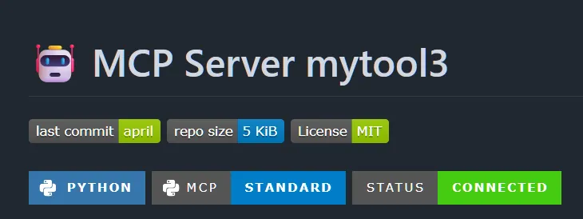

MCP Server


A lightweight Model Context Protocol (MCP) server that provides a bridge between Claude AI and your local Python environment.
🌟 Overview
- mytool3 is a proof-of-concept MCP server built to demonstrate the seamless integration of local Python execution with Claude Desktop.
- It allows Claude to "step out" of its sandbox and interact with your machine via a standard tool interface.
📸 Screenshots

📁 Project Structure
mcp_gen/
├── .venv/
├── mcpgen/ # generator logic
├── ├── __init__.py
| ├── cli.py
├ ├── generator.py
│ ├── mytool3/ # MCP server
│ │ ├── __init__.py
│ │ ├── server.py
│ │ └── mcp.json
├── .gitignore
├── README.md
└── pyproject.toml
⚒️ Features Standard Discovery:
- Automatically announces its tools to Claude via the list_tools protocol.
- Synchronous Execution: Uses stdio transport for high-speed, local communication.
- Adaptive Integration: Fully compatible with the Claude Desktop interface.
⚒️ Installation & Setup
- Environment Initialization Standardize the local environment using a virtual environment to isolate the MCP dependencies.
# Clone the repository
git clone https://github.com/reory/mytool3.git
cd mytool3
Create and activate virtual environment
python -m venv .venv
source .venv/bin/activate # Automation for Mac/Linux
**OR: .venv\Scripts\activate (Windows)**
Upgrade core tooling
pip install --upgrade pip setuptools
- Dependency Resolution This project leverages the fastmcp SDK for streamlined protocol handling.
# Install required MCP packages
pip install fastmcp mcp
Verify installation
python -c "import fastmcp; print(f'FastMCP version: {fastmcp.version}')" - Service Registration (Claude Desktop) To hook the server into the Claude Desktop runtime, inject the absolute paths into your local configuration. Command-line shortcut (PowerShell): PowerShell
Open the specific MSIX config path for the Windows Store version
- notepad "$env:LOCALAPPDATA\Packages\Claudepzs8sxrjxfjjc\LocalCache\Roaming\Claude\claudedesktop_config.json" JSON Payload:
JSON { "mcpServers": { "mytool3": { "command": "C:\Absolute\Path\To\.venv\Scripts\python.exe", "args": ["C:\Absolute\Path\To\mcpgen\mytool3\server.py"] } } }
🧪 Development Workflow
Manual Protocol Test Before testing in the Claude UI, ensure the server initiates the stdio transport without Python exceptions:
# Set unbuffered mode to prevent pipe-hangs
export PYTHONUNBUFFERED=1
python mcpgen/mytool3/server.py
- Hot-Reloading (Optional) If iterating on tool logic, use the fastmcp dev-tools for immediate feedback:
fastmcp dev mcpgen/mytool3/server.py
🔧 Tools Available
| Tool Name | Parameters | Description |
|---|---|---|
hello |
name (string) |
Returns a personalized greeting from the local server. |
⚠️ Troubleshooting
- Silent Failures: If the "Running" badge is blue but no tools appear, ensure your server.py is returning CallToolResult and not CallToolRequest.
- The Ghost Sandbox: If changes to the code aren't reflecting, use Task Manager to End Task on all Claude processes to force a config reload.
- Import Errors: Ensure you run pip install mcp specifically for the Python version defined in your command path.
- It specifically calls out the 2026 UI features like the "Connectors" menu, which didn't exist in older versions of the app.Path Accuracy: It preserves that long, annoying "Packages" path we found—this is the #1 thing that trips people up.
- Code Logic: It warns about the Result vs Request trap we just solved.
🛣️ Roadmap Features
[ ] Persistent Memory (SQLite Integration) Goal: Give Claude a "long-term memory" that persists across different chat sessions.
[ ] File System Sentinel (Local I/O) Goal: Allow Claude to safely inspect and summarize local directory structures.
[ ] Web Research Bridge (Playwright/Scraper) Goal: Enable Claude to fetch real-time data from sites without official APIs (like documentation pages).
📁 Notes
- This was challenging to build as FastMcp is a new library in python and the documentation is new and still evolving. I had to cross reference documents from a few different sources. FastMcp
- Built By Roy Peters Contact 😁